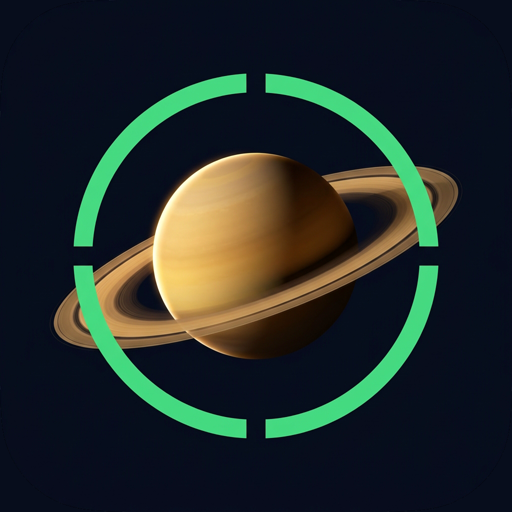

אפליקציות מאת חביב תרזי, שנבנו בקפידה ושומרות על הפרטיות שלכם: מה שקורה בטלפון שלכם נשאר בטלפון שלכם.

מכוונים את הטלפון לשמיים ומוצאים כל כוכב לכת, כוכב, קבוצת כוכבים או לוויין. בלי אינטרנט, ב-79 שפות.
זמני היום, הדלקת נרות ואזכרות לפי התאריך העברי, עם מצפן שמוצא את ירושלים. חינם ופרטי.